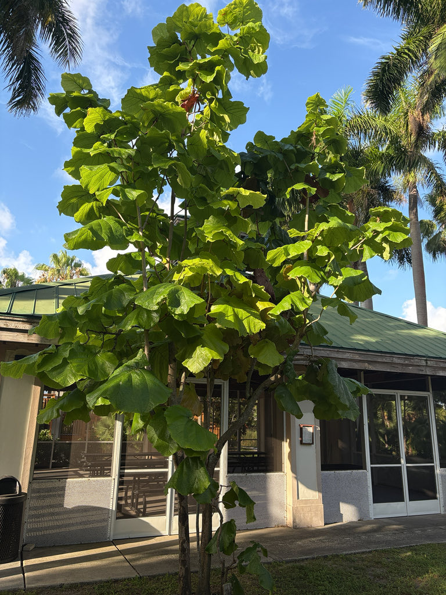

- Leaves can reach three feet across — round, stiff, and heavy. The fallen ones get picked up by staff regularly. Visitors sometimes ask if they can take one home.
- The Grandleaf Seagrape is also known as Eve's Umbrella and Tin Roof Tree. Both names are accurate — a single leaf is large enough to use as a rain shield, and the dark glossy surface does have something of a tin quality to it.
- Rare in Florida cultivation. The common Seagrape on Florida's beaches is a different species — this one is native to the Caribbean islands and not typically seen here.
- Juvenile plants produce even larger leaves than mature ones — the opposite of most trees.
Non-native. Native to coastal regions of the Caribbean — Antigua, Barbados, Barbuda, Dominica, Hispaniola, Martinique, Montserrat, and Puerto Rico. Not native to Florida. Member of Polygonaceae — the buckwheat family, which also includes knotweed and garden sorrel.
- The leaves are the story. They can reach 90 cm — nearly three feet — in diameter on a single leaf, round and stiff with yellow to red veins on the underside. Staff pick them up regularly as they fall. Visitors sometimes ask if they can take one home. The answer, politely, is no — but the impulse is understandable.
- This is not the Seagrape you see on Florida beaches. That is Coccoloba uvifera, a Florida native. This species — Coccoloba pubescens — is native to Caribbean islands and is rarely cultivated in the United States. It is an unusual specimen to find in a Manatee County garden.
- One detail that consistently surprises people: juvenile plants produce larger leaves than mature ones. Most trees do the opposite — young plants are modest, older ones impressive. Here it is reversed. A young Grandleaf Seagrape can have leaves that dwarf what the same tree will carry at full maturity.
- The park's specimen was given specifically to Palma Sola — the story of how it arrived is worth asking about at the office. [PROVENANCE NOTE: origin story to be added when confirmed.]
- A recent visitor — a wildlife photographer who comes regularly to photograph the Screech Owl roosting in the Royal Palm nearby — mentioned that she is often asked by other visitors whether they can take a fallen leaf home. That question, and the fact that people ask it, tells you something about this tree.
The fruit — small, grape-like clusters — is eaten by birds. Related Coccoloba species are documented nectar sources for bees and butterflies, and the dense evergreen canopy provides shade and perching structure.
As a Caribbean coastal species, it is adapted to the same conditions as Florida's native Seagrape and supports similar invertebrate and bird communities.
The massive fallen leaves decompose slowly and contribute to ground-layer habitat, though they also require regular cleanup — which is part of daily park operations near this specimen.
Greenish-white, small, produced on erect spikes up to 60 cm long. Not ornamentally significant. The tree is dioecious — male and female flowers on separate plants; only female trees produce fruit.
Small, approximately 2 cm in diameter, in grape-like clusters. Edible on related species; similarly edible here though not widely consumed. Eaten by birds.
The defining feature. Orbicular (round), extremely variable in size from small to up to 90 cm (3 feet) in diameter. Bright green above, paler below with yellow to reddish veins. Smooth wavy margin. Stiff and heavy — a large fallen leaf has real weight to it. Juvenile plants produce larger leaves than mature ones.
Upright, can grow to 2 feet or more in diameter. Open, sparsely branched crown.
The leaves are unmistakable — no other tree in the park or in most Florida gardens produces a round leaf anywhere near this size. Look for the yellow-red vein pattern on the underside. Fallen leaves on the ground around the tree are often as interesting as those still attached.
The fruit is edible, like other seagrapes, but this isn't a cultivated food plant and isn't a casual trail snack.
It has no known toxicity to people or dogs.


- © Randall Carter (CC-BY-NC), via iNaturalist
- © Maria Escobar (CC-BY-NC), via iNaturalist
- © Denise Sosa (CC-BY-NC), via iNaturalist